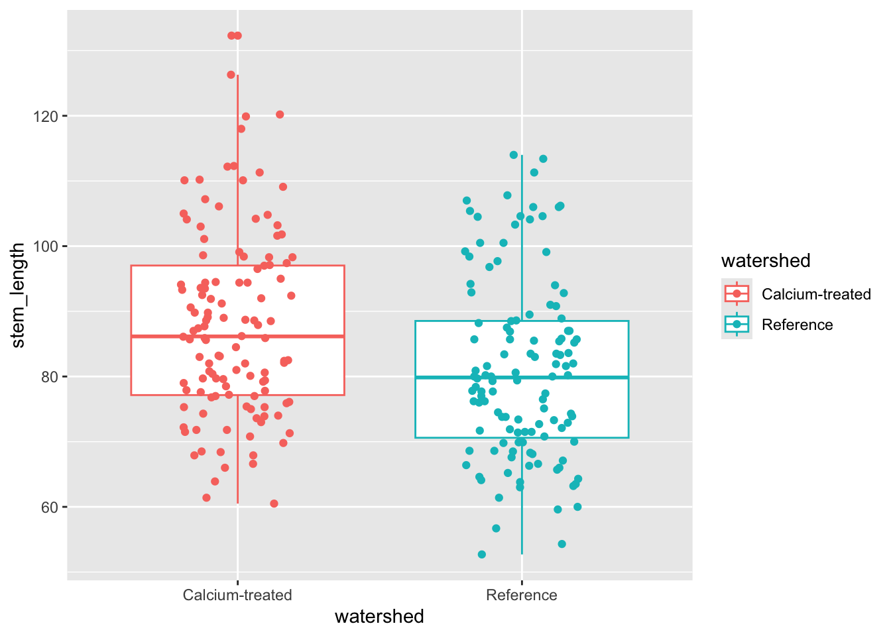

library(tidyverse)
library(lterdatasampler)Workshop dates: April 17 (Thursday), April 18 (Friday)
1. Summary
Packages
tidyverse
lterdatasampler
Operations
New functions
- display data from package using
data()
- visualize QQ plots using
geom_qq()andgeom_qq_line()
- create multi-panel plots using
facet_wrap()
- compare group variances using
var.test()
- do t-tests using
t.test()
- make rownames into a separate column using
rownames_to_column()
- use
geom_pointrange()to show means and 95% CI
Review
- chain functions together using
|>
- filtering observations using
filter()
- manipulate columns using
mutate()andcase_when()
- visualize data using
ggplot()
- create boxplots using
geom_boxplot()and show observation values usinggeom_jitter()
- create histograms using
geom_histogram()
- group data using
group_by()
- summarize data using
summarize()
General Quarto formatting tips
You can control the appearance of text, links, images, etc. using this guide.
Data source
The data on sugar maples is from the lterdatasampler package. The package developers (alumni of the Bren Masters of Environmental Data Science program!) curated a bunch of datasets from the LTER network into this package for teaching and learning. Read about the package here.
The source of the data is Hubbard Brook Experimental Forest. Read more about the data here.
2. Code
Remember to set up an Rproject before starting!
1. Set up
Insert a code chunk below to read in your packages. Name the code chunk packages.
Because we are using data from the package lterdatasampler, we don’t need to use read_csv().
Instead, we can use data() to make the data frame show up in the environment.
Insert a code chunk below to display hbr_maples in the environment using data("hbr_maples"). Name the code chunk data.
data("hbr_maples")2. Cleaning and wrangling
Insert a code chunk to:
- create a new object from
hbr_maplescalledmaples_2003
- filter observations to only include the year 2003
- mutate the
watershedcolumn so thatW1is filled in asCalcium-treated
Name the code chunk data-cleaning.
maples_2003 <- hbr_maples |> # start with hbr_maples data frame
filter(year == "2003") |> # filter to only include observations from 2003
mutate(watershed = case_when( # rename watersheds
watershed == "Reference" ~ "Reference",
watershed == "W1" ~ "Calcium-treated"
))3. Exploratory data visualization
Insert a code chunk to make a boxplot + jitter plot comparing stem lengths between watersheds. Remember to:
- color by watershed
- control the jitter so that the points don’t move up and down the y-axis
Name the code chunk boxplot-and-jitter.
# base layer: ggplot
ggplot(data = maples_2003, # starting data frame
aes(x = watershed, # x-axis
y = stem_length, # y-axis
color = watershed)) + # coloring by watershed
# first layer: boxplot
geom_boxplot() +
# second layer: jitter plot
geom_jitter(height = 0, # making sure points don't move along y-axis
width = 0.2) # narrowing width of jitter
4. Checks for t-test assumptions
Insert a code chunk to create a histogram. Name the code chunk histogram.
Use facet_wrap() to create separate panels for each watershed.
ggplot(data = maples_2003, # starting data frame
aes(x = stem_length)) + # x-axis (no y-axis for histogram)
geom_histogram(bins = 6) + # number of bins from Rice Rule
facet_wrap(~watershed) # creating two panels to show watersheds separately
Insert a code chunk to create a QQ plot. Name the code chunk qq-plot.
Use facet_wrap() to create separate panels for each watershed.
# base layer: ggplot call
ggplot(data = maples_2003, # starting data frame
aes(sample = stem_length)) + # y-axis for QQ plot (no x-axis for QQ plot)
# first layer: QQ reference line
geom_qq_line(color = "blue") + # showing this in blue so it's easier to see
# second layer: QQ plot
geom_qq() +
# creating "facets"
facet_wrap(~watershed) # show watersheds separately
Check in: using histograms and QQ plots, does stem length seem to be normally distributed?
Yes, because the histogram looks symmetrical, and the QQ plot points follow a straight line.
Next, we’ll check our variances. We can make sure we know where the F test results are coming from by calculating the variance ratios ourselves.
# calculate variances
stem_length_var <- maples_2003 |> # starting data frame
group_by(watershed) |> # group by watershed
summarize(variance = var(stem_length)) # calculate variances
# calculate variance ratio (use this number to double check against results of var.test)
205.7026/194.3021[1] 1.058674Insert a code chunk to check the variances using var.test(). Name the code chunk F-test.
In the function var.test(), enter the arguments for:
- the formula
- the data
# doing F test of equal variances
var.test(
stem_length ~ watershed, # formula: response variable ~ grouping variable
data = maples_2003 # data: maples_2003 data frame
)
F test to compare two variances
data: stem_length by watershed
F = 1.0587, num df = 119, denom df = 119, p-value = 0.7563
alternative hypothesis: true ratio of variances is not equal to 1
95 percent confidence interval:
0.7378244 1.5190473
sample estimates:
ratio of variances
1.058674 Remember that this variance test is an F test of equal variances. You are comparing the variance of one group with another.
To communicate about this, you could write something like:
Using an F test of equal variances, we determined that variances were (equal or not equal) (F ratio, F(num df, denom df) = F statistic, p-value).
We determined that group variances were (equal or not equal) (F ratio, F(num df, denom df) = F statistic, p-value).
Fill in the blank here:
We determined that group variances were equal (F ratio = 1.06, F(119, 119) = 1.06, p = 0.76).
5. Doing a t-test
Insert a code chunk to do a t-test. Name the code chunk t-test.
In the function t.test(), enter the arguments for:
- the formula
- the variances in
var.equal =
- and the dataframe in
data =
t.test(
stem_length ~ watershed, # formula: response variable ~ grouping variable
var.equal = TRUE, # argument for equal/unequal variances (variances should be equal)
data = maples_2003 # data: maples_2003 data frame
)
Two Sample t-test
data: stem_length by watershed
t = 3.7797, df = 238, p-value = 0.0001985
alternative hypothesis: true difference in means between group Calcium-treated and group Reference is not equal to 0
95 percent confidence interval:
3.304134 10.497532
sample estimates:
mean in group Calcium-treated mean in group Reference
87.88583 80.98500 6. Communicating
a. visual communication
When doing a t-test, remember that you are comparing means. To visualize the data in a way that reflects the values you are comparing (again, you are comparing means), you can visualize the means of each watershed with the standard deviation (spread), standard error (variation), or confidence interval (confidence).
In this example, we will show 95% confidence intervals.
In this code chunk, we are calculating the means and 95% confidence intervals. Name the code chunk ci-calculation.
maples_ci <- maples_2003 |> # start with the maples_2003 data frame
group_by(watershed) |> # group by watershed
summarize(ci = mean_cl_normal(stem_length)) |> # calculate the 95% CI
deframe() |> # expand the data frame
rownames_to_column("watershed") # make the data frame rownames a column called "watershed"Before moving on, look at the maples_ci object to make sure you know what it contains.
Note that this visualization uses two data frames. We use maples_2003 to show the underlying data using geom_jitter(), and maples_ci to show the mean and 95% CI.
# base layer: ggplot with the x- and y-axes
ggplot(data = maples_2003, # using the maples_2003 data frame
aes(x = watershed, # x-axis
y = stem_length, # y-axis
color = watershed)) + # coloring points by watershed
# first layer: showing the underlying data
geom_jitter(height = 0, # no jitter in the vertical direction
width = 0.1, # smaller jitter in the horizontal direction
alpha = 0.4, # make the points more transparent
shape = 21) + # make the points open circles
# second layer: showing the summary (mean and 95% CI)
geom_pointrange(data = maples_ci, # using the maples_ci data frame
aes(x = watershed, # x-axis
y = y, # y-axis
ymax = ymax, # upper bound of confidence interval
ymin = ymin)) + # lower bound of confidence interval
labs(x = "Watershed", # labeling the axes
y = "Stem length (cm)") +
# figure customization
# Note: this is optional (but nice to do!)
scale_color_manual(values = c("Calcium-treated" = "darkorchid3",
"Reference" = "tomato3")) + # changing the point colors
theme_bw() + # using a theme
theme(legend.position = "none") # getting rid of the legend
b. Writing
Summarize the results of the t-test in one sentence. Before you do, make sure you know the:
- type of test
Student’s t (note: this is because variances are equal)
- Sample size
n = 120 for calcium-treated, n = 120 for reference (240 total)
- significance level (\(\alpha\))
\(\alpha\) = 0.05
- degrees of freedom
238 (note: 240 - 2 = 238)
- t-value (aka t-statistic)
3.8
- p-value
p < 0.001 (don’t need to give exact number for anything below 0.001)
We found a significant difference in sugar maple stem lengths between calcium-treated (n = 120) and reference (n = 120) watersheds (Student’s t-test, t(238) = 3.8, p < 0.001, \(\alpha\) = 0.05).
END OF WORKSHOP 3
Extra stuff
Why do we have to put in watershed == "Reference" ~ "Reference"?
Let’s see what happens when you don’t include that:
hbr_maples |> # start with hbr_maples data frame
filter(year == "2003") |> # filter to only include observations from 2003
mutate(watershed = case_when( # rename watersheds
# note that we're missing the "Reference" line of code here
watershed == "W1" ~ "Calcium-treated"
)) |>
# including this to only display the first 6 rows of the data frame
head()# A tibble: 6 × 11
year watershed elevation transect sample stem_length leaf1area leaf2area
<dbl> <chr> <fct> <fct> <fct> <dbl> <dbl> <dbl>
1 2003 <NA> Low R1 1 86.9 13.8 12.1
2 2003 <NA> Low R1 2 114 14.6 15.3
3 2003 <NA> Low R1 3 83.5 12.5 9.73
4 2003 <NA> Low R1 4 68.1 9.97 10.1
5 2003 <NA> Low R1 5 72.1 6.84 5.48
6 2003 <NA> Low R1 6 77.7 9.66 7.64
# ℹ 3 more variables: leaf_dry_mass <dbl>, stem_dry_mass <dbl>,
# corrected_leaf_area <dbl>In the watershed column, the mutate()/case_when() function replaced Reference with NA, which is a missing value.
Whenever you use mutate()/case_when(), you have to explicitly name each value in the column you’re mutating.
If you want to keep values, you can insert the argument TRUE ~. Here’s what that code/output would look like:
hbr_maples |> # start with hbr_maples data frame
filter(year == "2003") |> # filter to only include observations from 2003
mutate(watershed = case_when( # rename watersheds
watershed == "W1" ~ "Calcium-treated", # change all occurrences of W1 in the watershed column to be Calcium-treated
# note that this has to come LAST
TRUE ~ watershed # keep any values that are not explicitly named as the original value
)) |>
# including this to only display the first 6 rows of the data frame
head()# A tibble: 6 × 11
year watershed elevation transect sample stem_length leaf1area leaf2area
<dbl> <chr> <fct> <fct> <fct> <dbl> <dbl> <dbl>
1 2003 Reference Low R1 1 86.9 13.8 12.1
2 2003 Reference Low R1 2 114 14.6 15.3
3 2003 Reference Low R1 3 83.5 12.5 9.73
4 2003 Reference Low R1 4 68.1 9.97 10.1
5 2003 Reference Low R1 5 72.1 6.84 5.48
6 2003 Reference Low R1 6 77.7 9.66 7.64
# ℹ 3 more variables: leaf_dry_mass <dbl>, stem_dry_mass <dbl>,
# corrected_leaf_area <dbl>If you combine arguments where you are changing values (for example, watershed == "W1" ~ "Calcium-treated") with TRUE ~ column name, you can change values and keep the original values in the column.
Shapes in figures
In class, we used shape = 21 in the geom_point() call to make the points show up as open circles. By default, ggplot() uses shape = 16 for all geometries that include points.
This figure below shows the 26 options for shapes you can use in any plot with a point geometry.
Shapes 0-14 are only outlines (with a transparent fill). Shapes 15 - 20 are filled (no outline). This means you control them with color in the aes() function, and scale_color_() functions. These show up in pink in the plot below.
Shapes 21 - 25 include outlines and fills. You can manipulate both: you can change the outline using color and scale_color_() functions, and change the fill with fill and scale_fill_() functions. In the plot, outlines show up in pink and fills show up in yellow.
Credit to Albert Kuo’s blog post for inspiring me to make my own reference figure, and Alex Phillip’s colorblind friendly schemes for the colors in the figure.